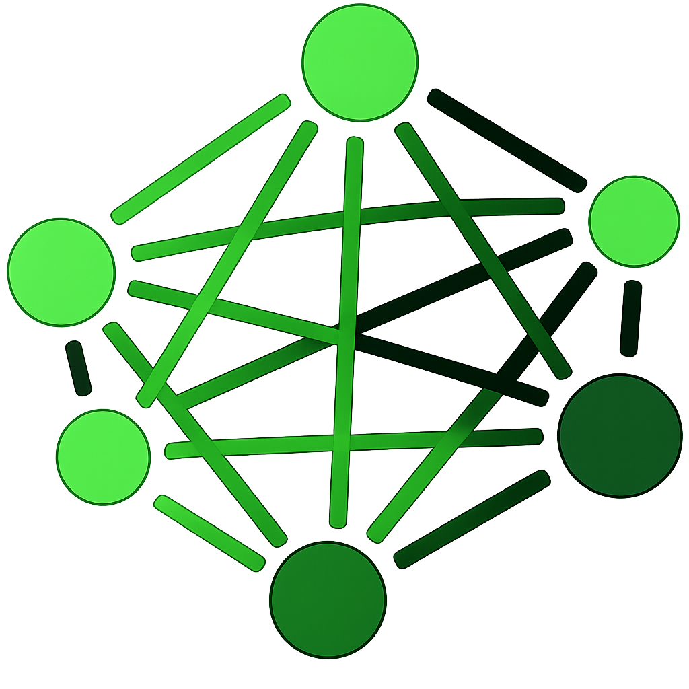
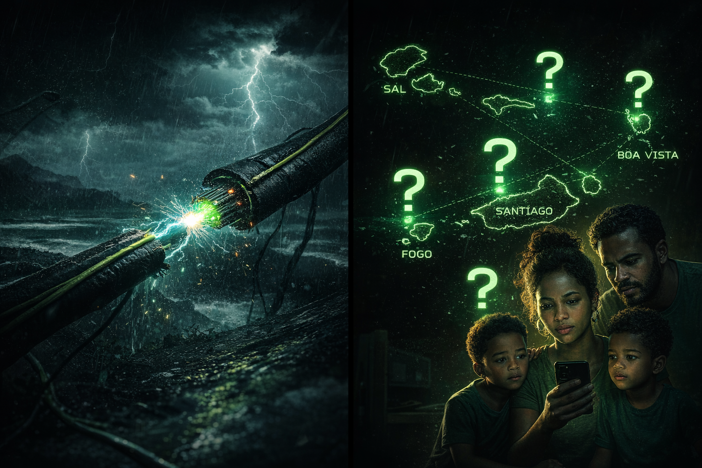
Messages hop via Bluetooth (10-50m) and Wi-Fi Direct (up to 200m). Local routing table prevents duplicates.
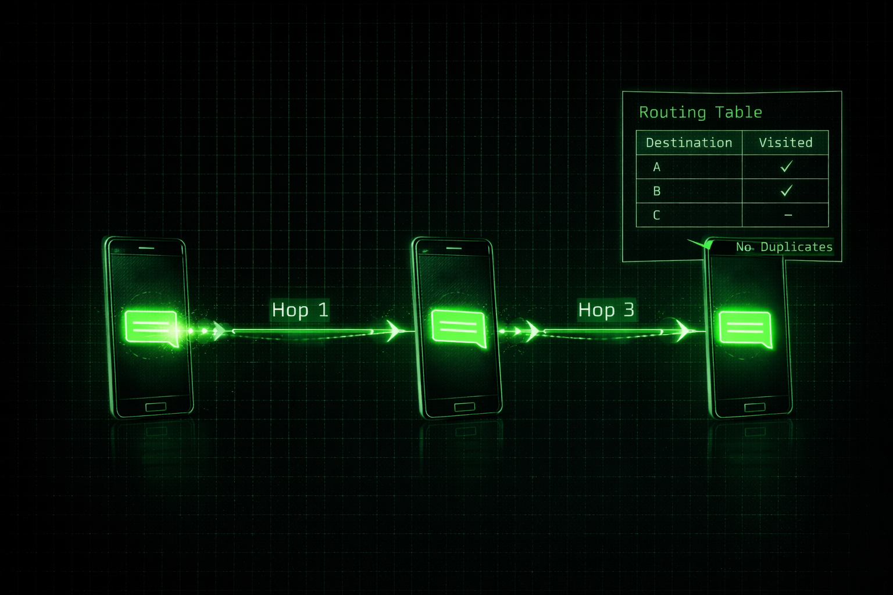
Lightweight translation models, dictionary cache grows with use. Reduces P2P payload and breaks language barriers.
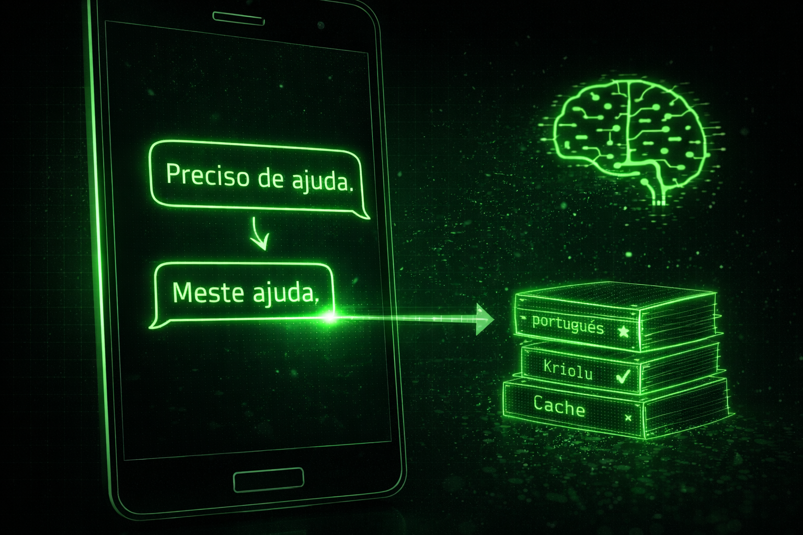
Queued messages stored locally, sync to server once connectivity restores. No data loss.
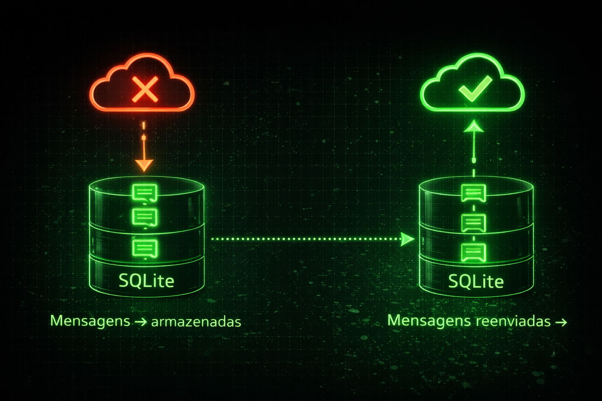
LoRa/mesh relays (1-10km) for remote zones – $100–800 per node.
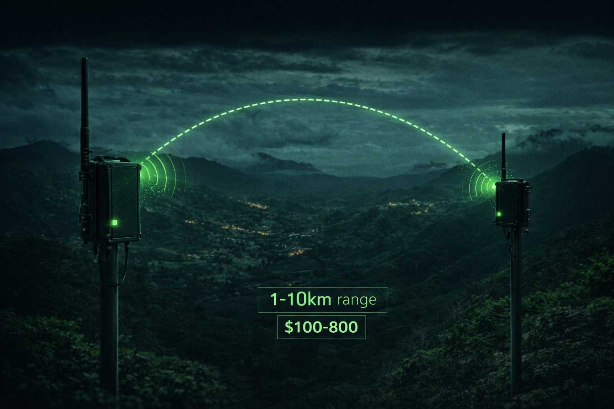
➜ Range: Bluetooth 50m | Wi‑Fi Direct 200m | LoRa optional 10km
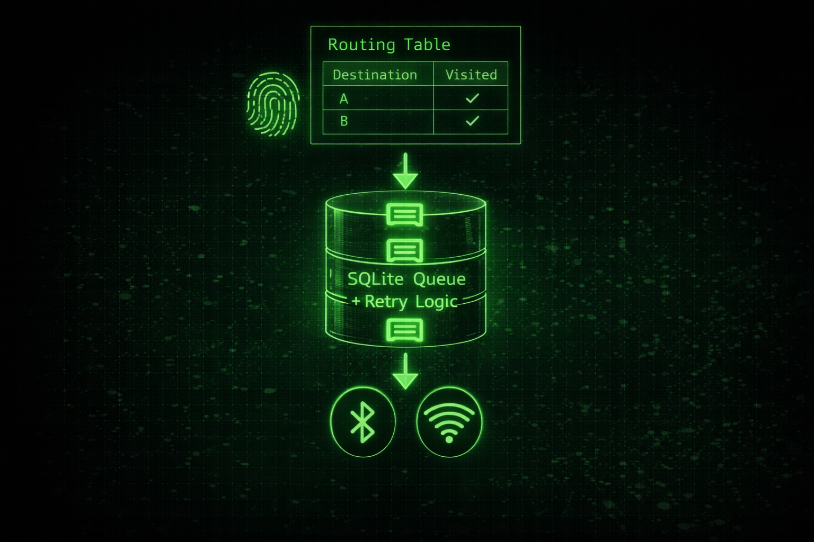
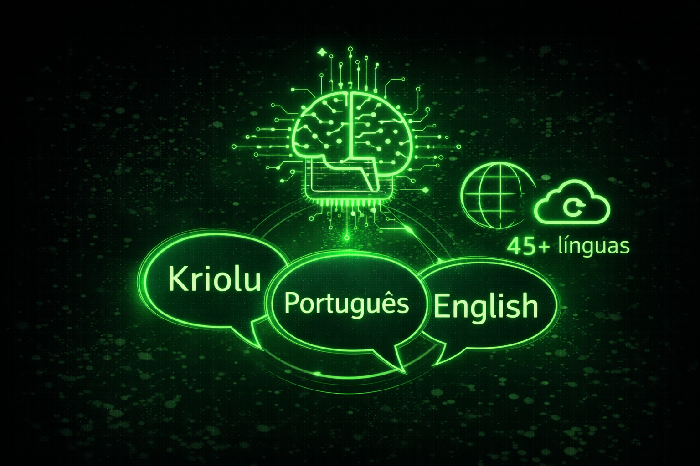
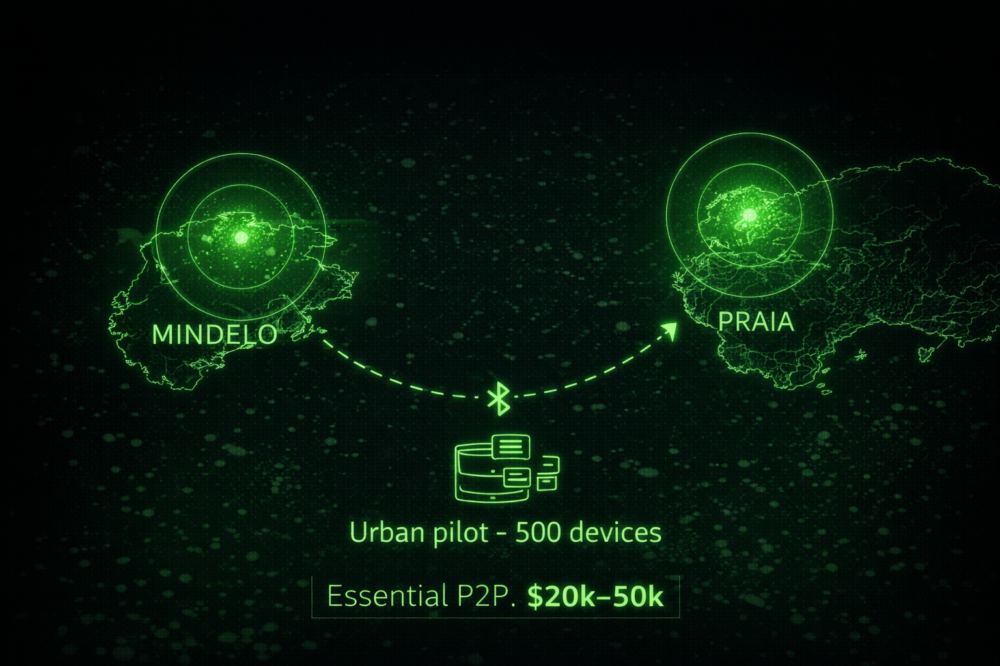
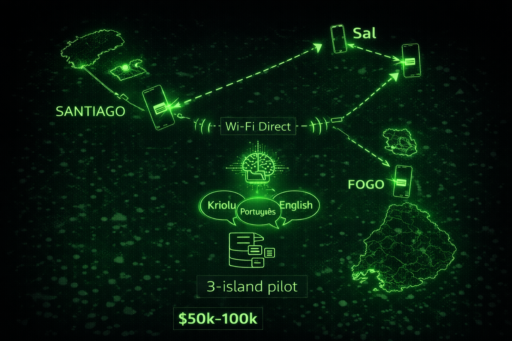
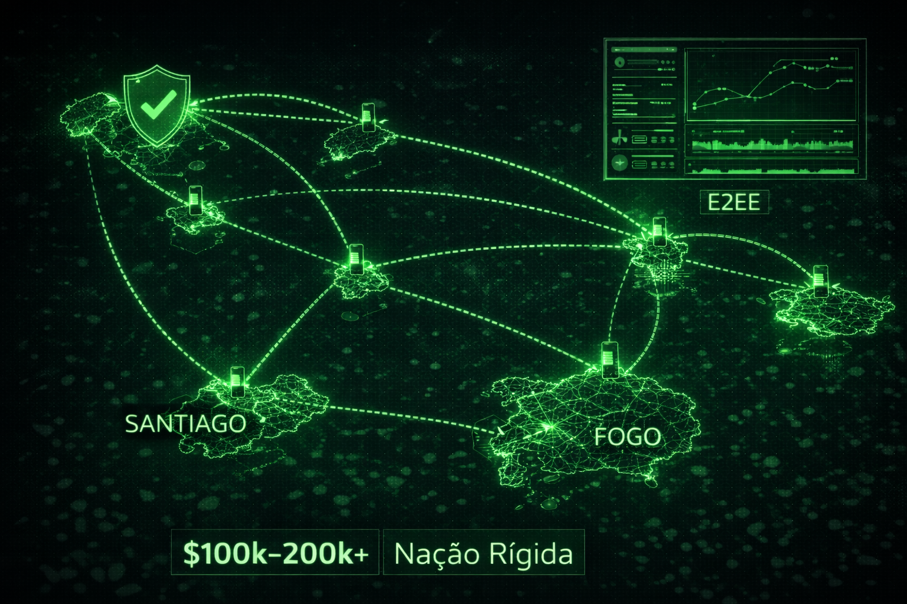
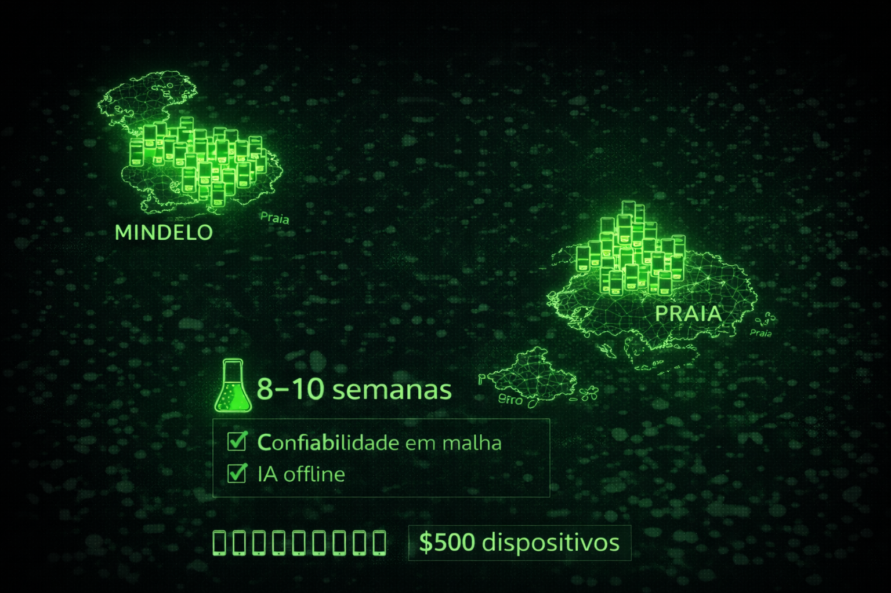
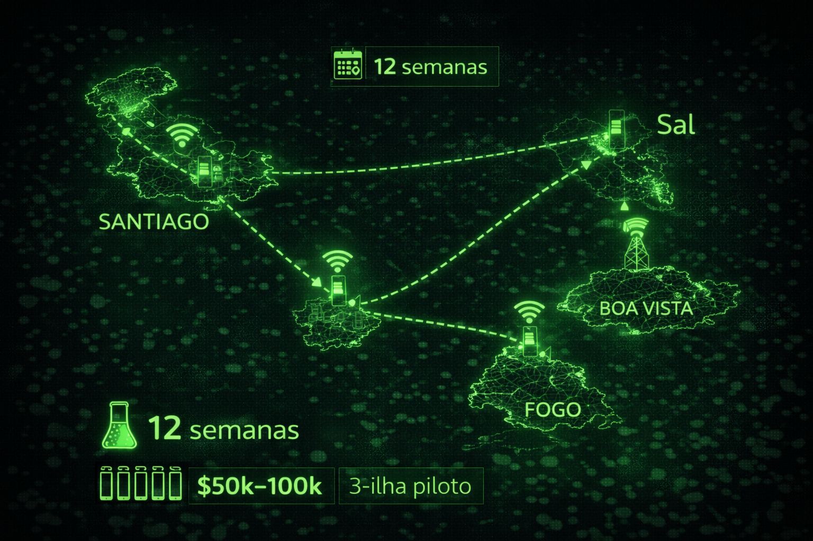
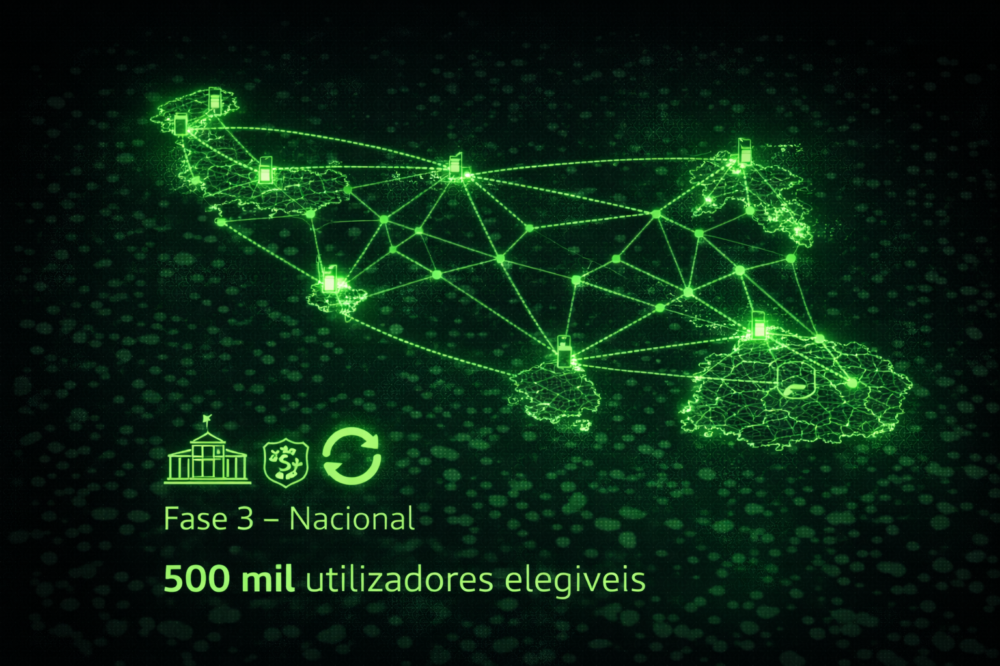